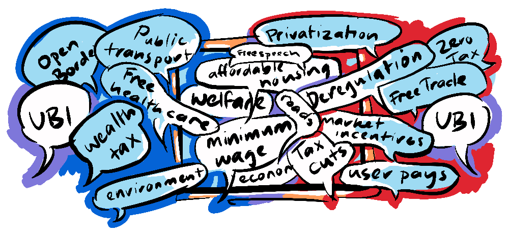

~ getting aligned through history ~
"Man is by nature a political animal" - Aristotle
In part 2 of this alignment series we explored the political polarisation of individual and collective interests and revealed a reaction to this in a bourgeoning centrist movement. We have identified the problem, and I intend to give equal time to proposing solutions. Let's first ask...
We've discussed that polarised politics in a democracy can land policy "somewhere in the middle" and that these compromises often lead to sub-optimal zero-sum outcomes with no one really getting what they want. Centrism too can gravitate to compromise, reinforcing the status quo.
Take for example Universal Basic Income which is still considered a radical option and yet it has left-wing supporters like Rutger Bregman and right-wing proponents like Milton Friedman, and is marketed by business-savvy political hopefuls like Andrew Yang as a solution that suits the interests of individual freedoms and collective well-being. UBI promises to not only provide for the least fortunate, satisfying the collective interests of leftists, but to also do away with the bureaucracy of means-testing, maybe even precluding the need for left-leaning policies like minimum wage, appealing to small-government libertarian individualists.
However, because centrism can reinforce the status quo, "radical" ideas that suit both "sides" may not make the Overton window.

So, is there a way to collaborate to create solutions that cater to the individual and the collective? History shows us there are."Tory men and liberal policies are what have changed the world" - Richard Nixon
Nixon's quote was one he hoped to embody, advocating not for compromised policies, but for a bold open-mindedness to the merits of opposing viewpoints. And while it is debatable whether he achieved this during his tarnished presidency, Nixon's statement was not entirely empty. His government created the Environmental Protection Agency and initiated affirmative action policies in federal contracting. He also toyed with a form of UBI back in the 70s, but eventually abandoned the idea.
In my own country of New Zealand, it was John Key's right-wing conservative National Party lead government who passed the Marriage Equality bill (recognising same-sex marriage). Like Nixon, Key was open to enacting policies who's time had come, regardless of political alignment.
It's important to point out that these policies would not gain any headway if not pushed forward by progressive political movements. Political conservatism can be seen as a gatekeeper to progress, performing the function of delaying premature or unproven radical changes.
So, how do you prove new policies?
In How to be an Anti-Racist, Ibram X Kendi looks back at the struggle for racial equality in America and demonstrates that what he calls "Suasion" (the demonstration of a demographic's worthiness or value) is an ineffective strategy for changing policy. Rather he discovered that...
"The source of racist ideas was not ignorance and hate, but self-interest." - Ibram X. Kendi
Kendi realised that racism was a tool to maintain power, so proving one's own worthiness is pointless. Successful approaches had to consider the self-interest of the powerful. For some, this might feel unfair; that a group looking for equal rights needs to consider the interests of the very people who are oppressing them - and it is!

So, while Kendi argues that a more equitable society would be more prosperous and stable (promising benefits to the individuals in power) he also encourages activism and protest to make maintaining racist policy difficult. This creates a situation where it is in the self-interest of policy-makers to change racist policies.

Fighting for one's own rights isn't the only option. John Stuart Mill in The Subjection of Women which he developed with his wife Harriet Taylor Mill, argued for women's rights from the perspective of the dominant power at the time; men.
"Were women as well educated as men, their conversation also would be as useful, as agreeable, or as interesting to men, as that of men is to women." - J.S Mill
As comically pompous and aggrandising of men's (always useful, agreeable and interesting to women) conversation as this is, Mill is appealing to the individual interests of men at the time, in service of a collective value (equality of the sexes). He draws attention to the fact that deliberately denying women education means that men are doing themselves and their progeny a disservice by guaranteeing themselves a life spent with a less educated partner and parent. He also criticises the impulse, to make one's partner less, as a form of intellectual weakness.

As a Utilitarian, Mill was concerned with creating the greatest happiness for the greatest number, and well before the birth of game theory he was aware that this proposition was a non-zero-sum game; one where the sum benefit could increase for a collective comprised of individuals.
Right back to Aristotle, thinkers have emphasised that humans do not live in a vacuum, challenging the idea of the "self-made" man. His concept of Polis, embodied in this post's opening quote, held that humans are, by their nature, political because the individual is reliant on the collective.
"... the individual, when isolated, is not self-sufficing; and therefore he is like a part in relation to the whole." - Aristotle
Aristotle understood that humans are making individual and collective choices simultaneously, and that the best choice was one that followed the same utilitarian calculus as Mill, the greatest happiness for the individual and the collective.

In this way, Aristotle, who was interested in how one could make virtuous decisions, was arguing for a sort of Nash Equilibrium between the individual and the collective in order to evaluate good choices.
We have seen from thinkers and politicians such as Aristotle, Mill, Kendi, Nixon and Key that humans have always been concerned with aligning the interests of the individual and the collective, from enacting the policies of the opposition to considering the self-interest of those in power in service of collective goals. This is because these thinkers appreciated that aligning the individual and the collective is non-zero-sum. We know it is very possible to make decisions that are bad individually and collectively, feel free to let us know your favorite (or least favorite as the case may be) example in the comments. Equally, there are decisions that are beneficial to both the individual and the collective. In fact there are lots of them.
In the next part we will explore the nature of humanity as a social species, why we naturally cooperate at some times and fail to do so at others, and point towards a radical way to overcome our limitations.